色だけ日記
今日の気分を、
色ひとつで。
文章も写真もいりません。その日の気分に近い色を1色えらぶだけ。続けるうちに、カレンダーがあなただけの色の模様になっていきます。
ダウンロードApp Store無料・iPhone 向け
※ 画面下にバナー広告が1つ表示されます
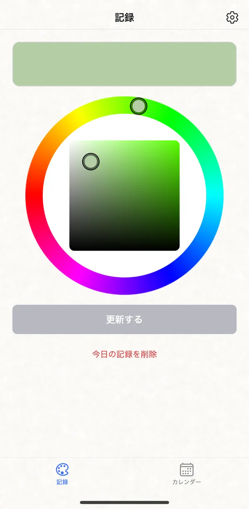
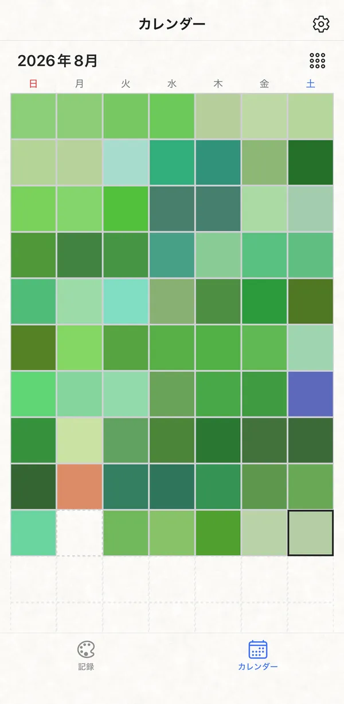
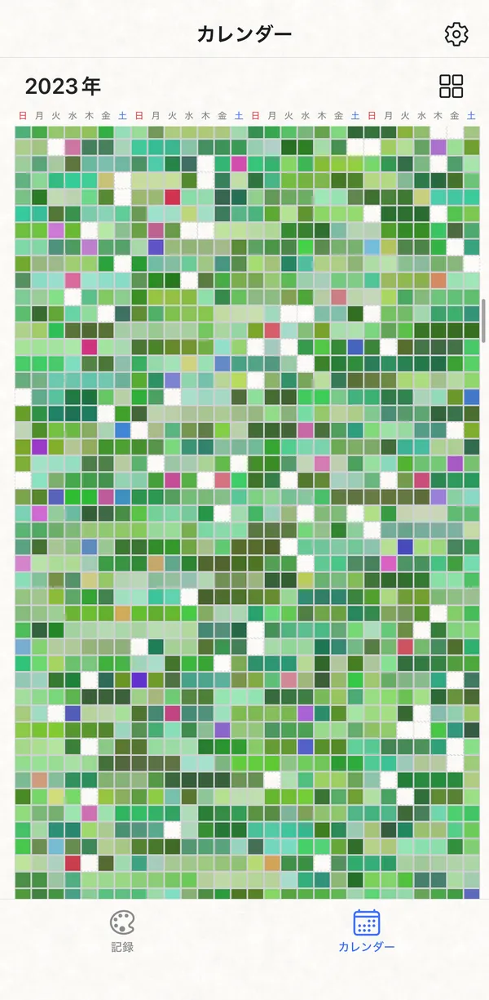
色を押すと、別の一年に切り替わります
01 ― 記録
直感で選ぶだけ。
言葉はいりません。
アプリを開いて、色を選んで、保存。3タップで今日の記録はおしまいです。うまく言葉にできない日も、色なら残せます。
- 1日1色。その日のうちなら何度でも塗り直せます
- 毎日18時に「今日の色は何色？」とそっとお知らせ
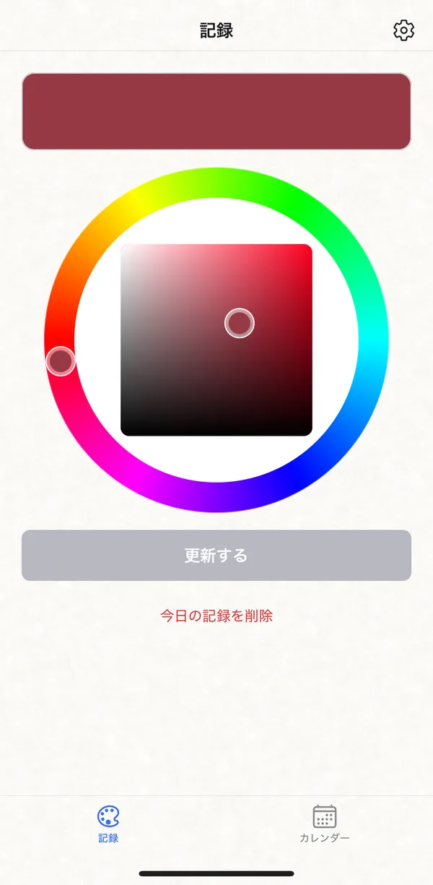
02 ― 色
プリセットはなし。
毎日、色を選び直す。
用意された色から選ぶのではなく、色相も濃さも自由に。昨日と同じ赤でも、今日は少しだけくすんでいるかもしれません。
- 色に意味づけや点数はつけません
- その日の色は、その日だけのもの
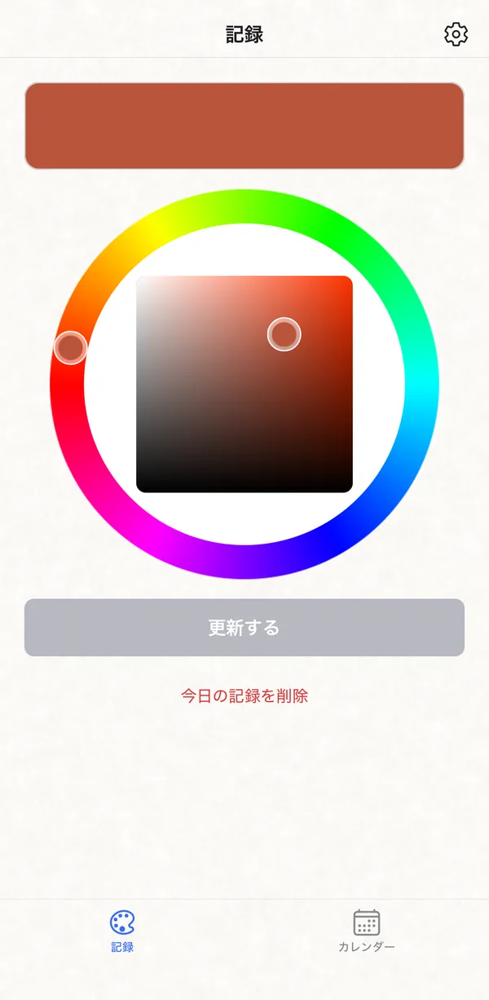
03 ― カレンダー
飾らない画面で、
あなたの色が主役に。
日付の数字も、文字もない。白い展示室のように、色だけを静かに並べます。
- 過ぎた日は塗り直せません。空白の日も、そのままに
- 記録した日は、色のマスがひとつずつ増えていきます
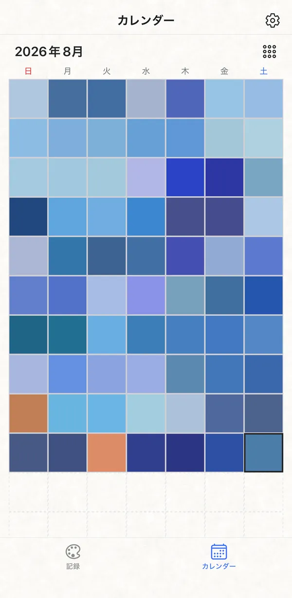
04 ― ふり返り
一年分の色が、
あなただけの模様に。
ピンチ操作で、月の表示から年の表示へ。一年をまるごと眺めると、季節や気分の流れが模様になって見えてきます。
- 月表示と年表示はピンチやボタンで切り替え
- 年表示で日を押すと、その日の月へ戻れます
どんな一年になるかは、
あなた次第。
同じアプリでも、選ぶ色が違えば、まったく違う模様になります。
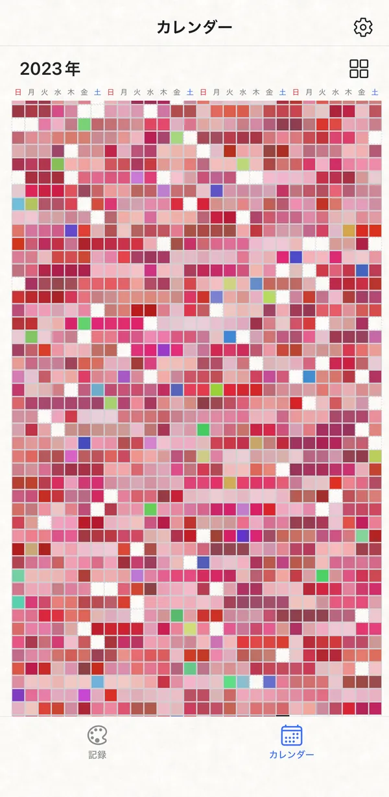
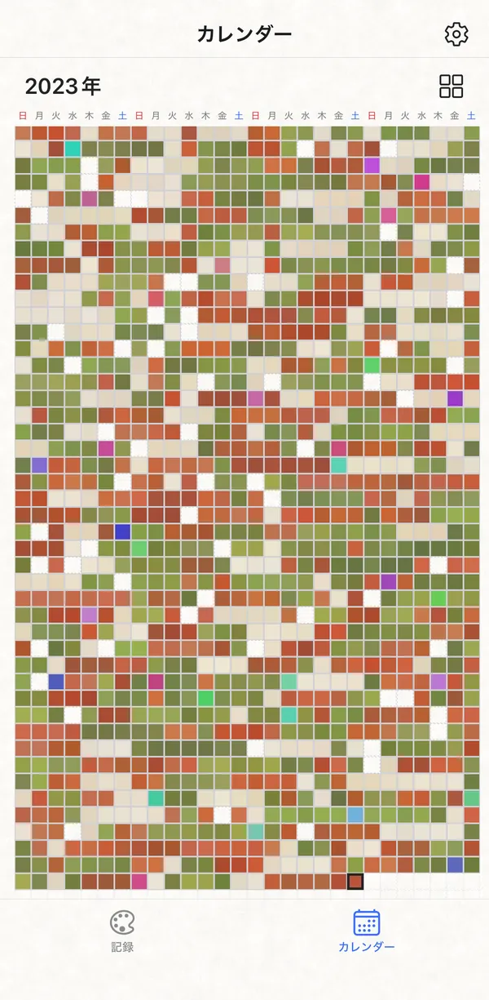
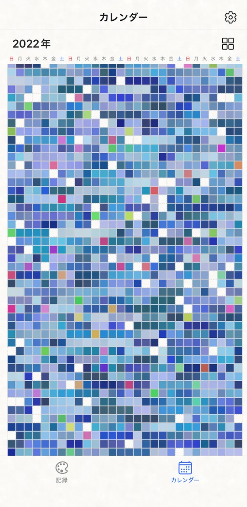
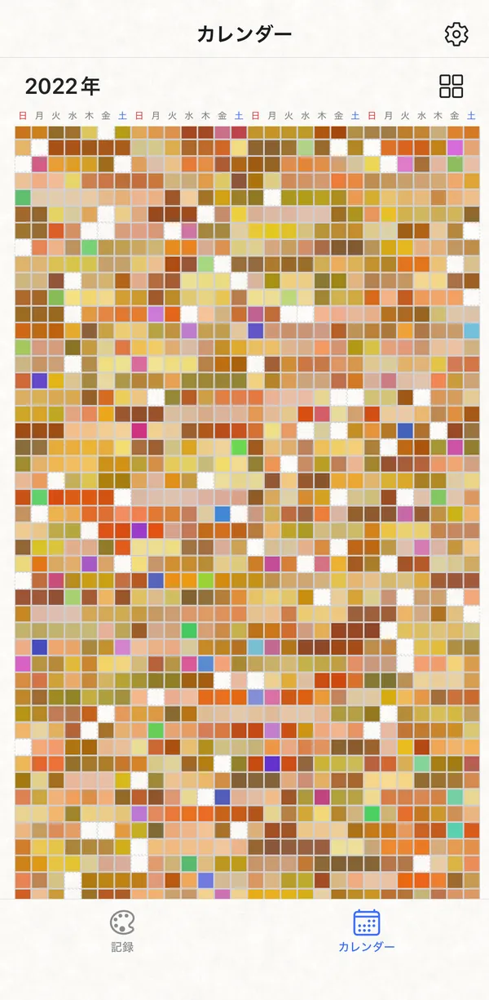
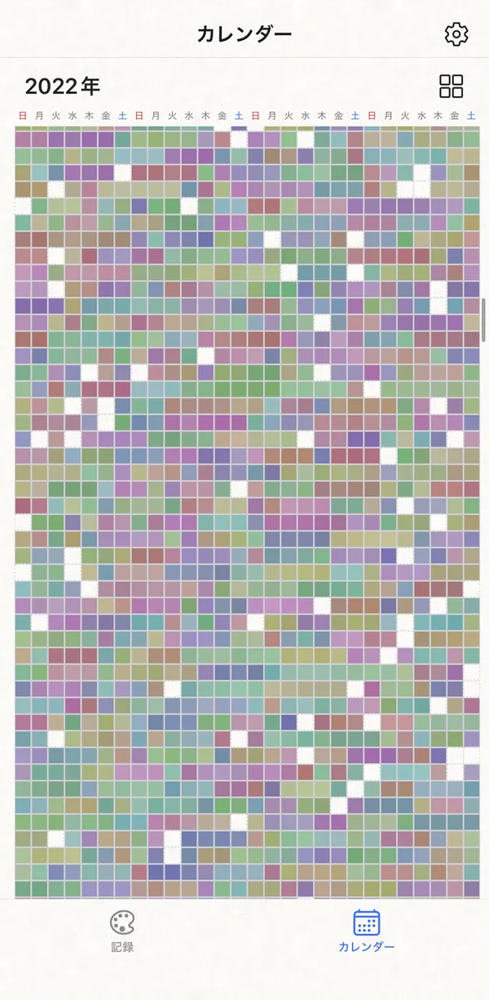
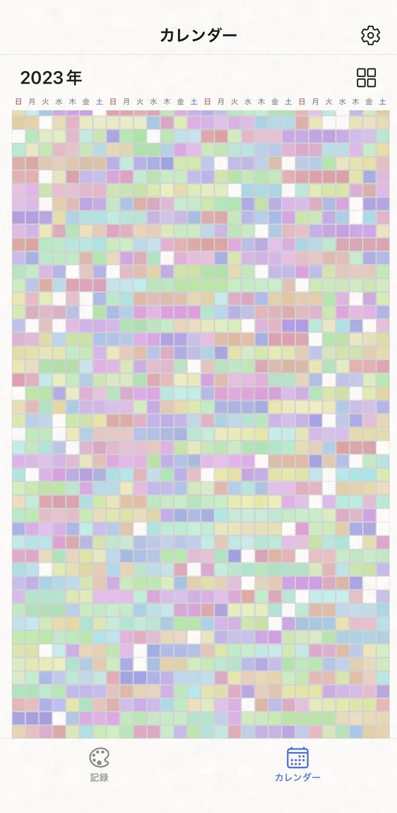
※ 画面はイメージです
記録は端末の中だけ。
登録もいりません。
ダウンロードしたら、すぐに今日の色から始められます。
アカウント不要
メールアドレスもログインもいりません。
記録は端末の中に
選んだ色はあなたのiPhoneにだけ保存され、外へ送られることはありません。
見せない日記
フォローも、いいねも、ランキングもありません。誰にも見られない、自分だけの記録です。
無料で使えます
課金はありません。画面下にバナー広告が1つ表示されます。